Další služby
Další služby pro váš vůz
Kromě běžného servisu nabízíme celou řadu dalších služeb. Mezi ně patří seřízení a kalibrace vybraných jízdních asistentů podle konkrétního modelu a výbavy vozidla, seřízení a kalibrace světlometů, diagnostika podvozku, geometrie vozidla, oprava brzdových kotoučů a další.
-
DIAGNOSTIKA
Diagnostika ODIS, vyhodnocení měřených hodnot a odborná měření podle projevu závady.
-

Specializovaná diagnostika
Cílené měření při hledání příčiny závady. Kontrola možného průniku spalin do chladicího systému pomocí přístroje VAS 531 009.
-
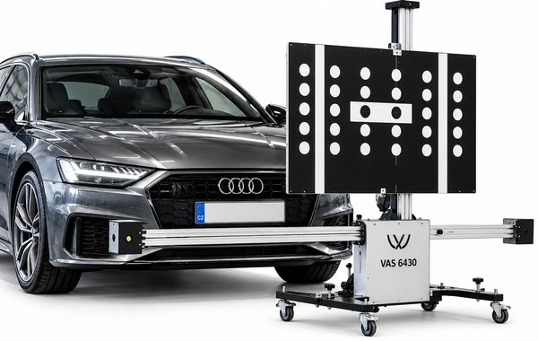
SEŘÍZENÍ A KALIBRACE JÍZDNÍCH ASISTENTŮ
Front Assist, Rear Assist, Lane Assist, Side Assist, Adaptive Cruise Control, Area View, Laser Scanner, Night Vision, Head-up Display
-
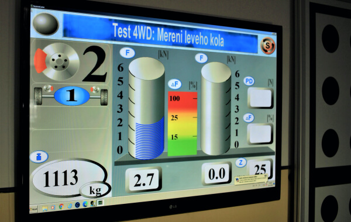
Diagnostika podvozku
Test tlumičů, brzdového systému (včetně elektrické parkovací brzdy), detekce vůlí obou náprav.
-
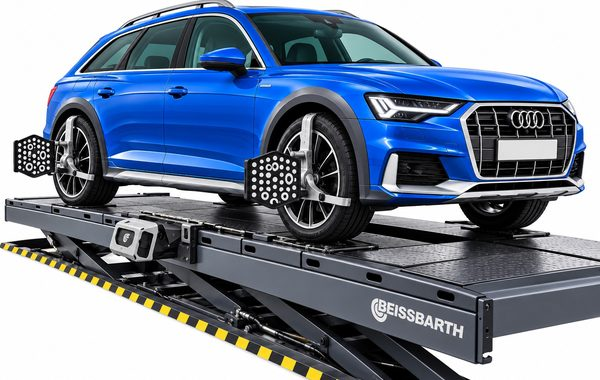
Geometrie vozidla
K seřízení geometrie vozidla používáme originální zařízení s technologií 3D.
-
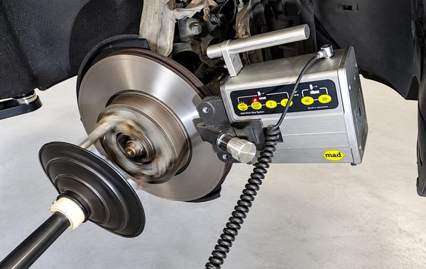
Oprava brzdových kotoučů
Provádíme opravy brzdových kotoučů soustružením přímo na vozidle bez nutnosti jejich demontáže.
-
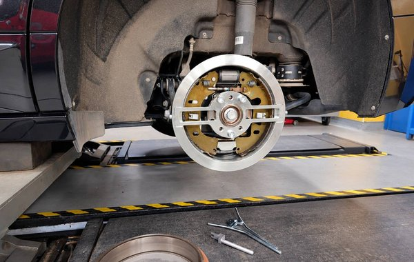
Servis zadních bubnových brzd elektromobilů
Kontrola a údržba zadních bubnových brzd. Přesné základní seřízení přípravkem řady T10635 podle servisní dokumentace konkrétního vozidla.
-
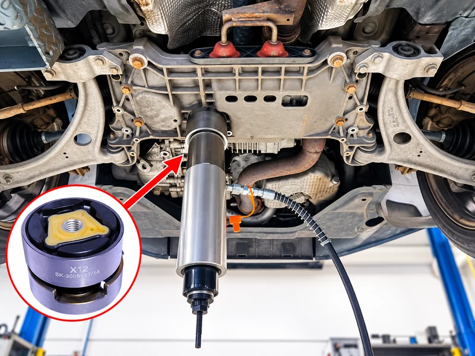
Výměna uložení nápravnice a ramen
Odborná výměna silentbloků nápravnice a ramen s využitím speciálních přípravků VAS. U vybraných vozidel lze výměnu provést bez demontáže celé nápravy.
-
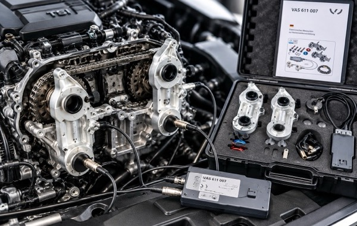
Výměna rozvodů
Odborné výměny rozvodových řemenů a řetězů v souladu s technologickými postupy výrobce.
-
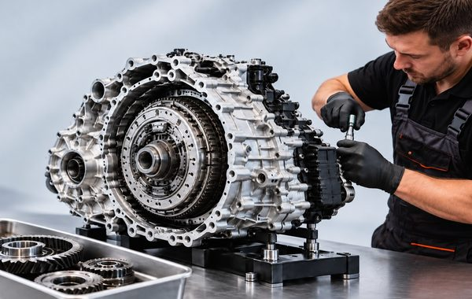
Převodovky DSG a S tronic
Komplexní diagnostika, údržba a mechanické opravy automatických převodovek DSG a S tronic.
-
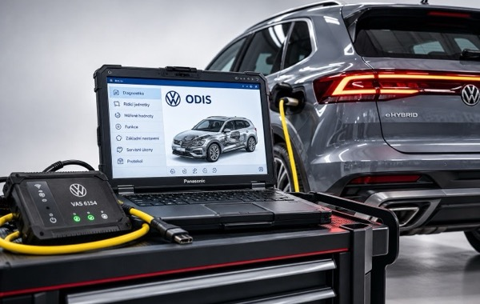
Servis hybridů a elektromobilů
Odborná údržba, pravidelné servisní prohlídky a diagnostika hybridních a elektrických vozidel VW Group.
-
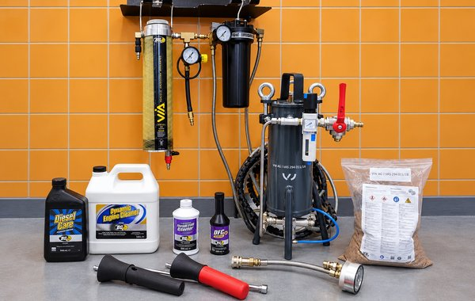
Dekarbonizace motoru
Chemická a mechanická dekarbonizace benzínových a naftových motorů, včetně odstranění karbonových úsad ze sacích ventilů.
-
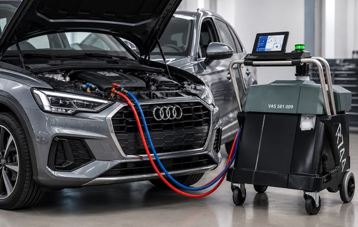
OPRAVY, PLNĚNÍ, ČIŠTĚNÍ KLIMATIZACE
Zjistíme příčinu nedostatečného chlazení a navrhneme opravu; samotné doplnění chladiva nenahrazuje odstranění netěsnosti.
-
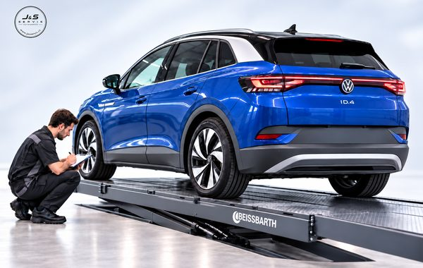
PŘÍPRAVA A REALIZACE STK
Zkontrolujeme a připravíme váš automobil před pravidelnou technickou prohlídkou. Po dohodě zajistíme také objednání termínu a přistavení vozidla na STK.
-
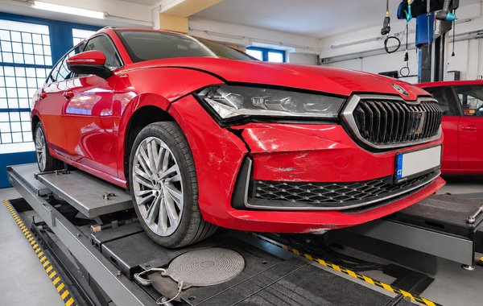
KONTROLA VOZIDLA PO NEHODĚ
Posoudíme viditelná poškození vozidla, zkontrolujeme dostupné bezpečnostní a technické prvky a doporučíme další postup.